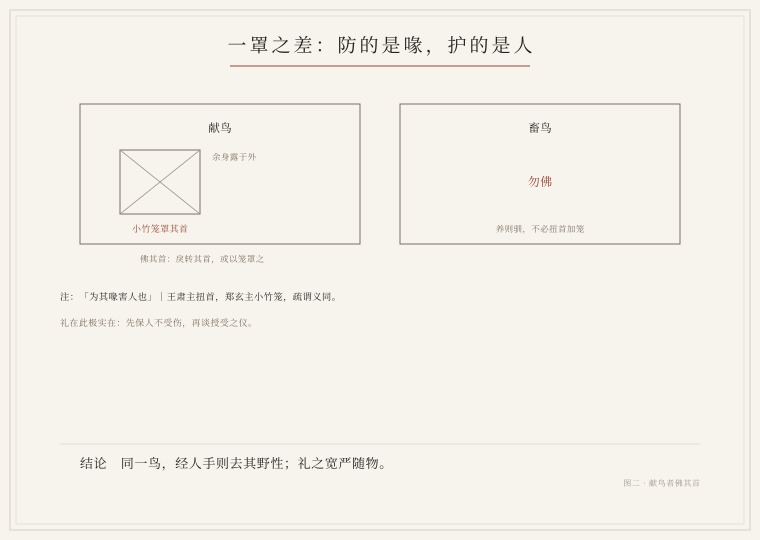

曲礼上 · 一·八十八 · 第 86 课
献活鸟，须把鸟首扭向一侧或以小笼罩住，防其喙啄人；若是自家养熟之鸟，则不必如此。
说什么事：献鸟者佛其首；畜鸟者则勿佛也。
落在哪一层：仪。所防者，喙。
为何编在此位：承上节献遗之仪，此节讲献活物之法。
【经】獻鳥者佛其首，畜鳥者則勿佛也。
【注】為其喙害人也。佛，戾也。蓋為小竹籠以冒之。畜，養也。養則馴。
佛 注「佛，戾也」。戾，扭转。疏引王云「佛谓取首戾转之，恐其喙害人也」。注又补「盖为小竹笼以冒之」。
佛其首 把鸟首扭转到不向人，或以笼罩其头。
畜鸟 注「畜，养也」。疏「养则驯」；驯，善也。
勿佛 不必扭首、不必加笼。鸟经人养，不啄人。
异文 《释文》「拂，本又作佛」。
献活鸟的，把鸟首扭向一侧（或用小竹笼罩住）；自家养熟的鸟，就不必这样。
一节讲一个很小的防护。献鸟之所以要佛其首，不是防鸟，是防「献」这件事变成伤害：鸟一啄，受献者受伤，献者失礼。
第一层 物理之防 注直说「为其喙害人也」。礼有很实在的一面：先保人不受伤。
第二层 戾与笼 扭转其首是手法，小竹笼冒之是器具。王、郑二说，一用手，一用器，疏谓「义同而加笼」。
第三层 畜与野之别 养则驯，驯则不必防。同一鸟，经人手则去其野性；礼之严宽，随物之状态而变。
第四层 献之两端 献者要防，受者要安。礼在两人之间做事。
与今日何干 送人一只活物、一把利器，先想它会不会伤到收的人。此节之心，今日仍通行。
| 左 | 右 |
|---|---|
| 献鸟 | 以活鸟相赠 |
| 佛其首 | 戾转其首，或以小竹笼冒之 |
| 为其喙害人 | 所防者喙，非鸟 |
| 畜鸟 | 家养之鸟 |
| 养则驯 | 经人养则不啄人 |
| 勿佛 | 不必扭首加笼 |
画两只鸟笼并置：左笼中之鸟首被小竹笼罩住、只露身尾，笼边斜插一支竹片；右笼之鸟首外露、安然立栖。两笼形制相同，惟左多一罩。不画人、不写文字。赭色只在左罩的竹篾交叉处。
